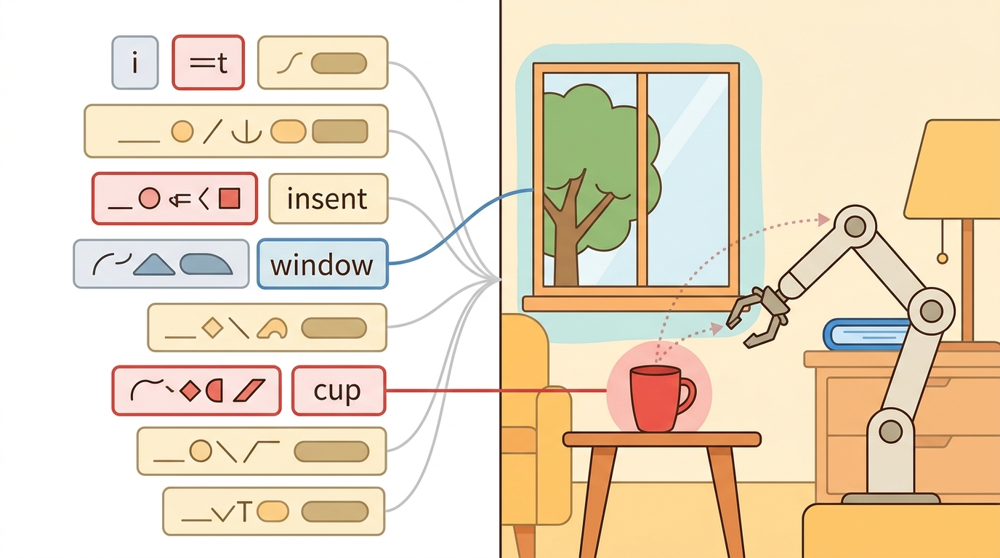

"The robot that cannot be interrupted is not a collaborator. It is a hazard with good intentions."
A Human Factors Engineer, Mid-Incident Review

This section assumes familiarity with task planning and clarification requests from section 31.5, and with object-centric grounding from section 31.4. The interaction patterns introduced here are extended in section 50.3 (intent recognition and trust calibration) and section 50.5 (human feedback and shared autonomy) in Part 10.
For Human-agent interaction, read the figure as an interface check: identify the language input, grounding evidence, action representation, safety gate, and logged result before accepting the agent behavior described below.
Build And Evaluation Checklist
Depth and self-containment. This section must move beyond command following to mixed-initiative interaction, where the human and robot jointly shape the task state. Readers should know how corrections, preferences, and trust signals enter the loop.
Production and evaluation contract. The important artifact is an interaction trace containing user command, agent proposal, human correction, confidence or trust cue, and final action. Without that record, human-agent interaction becomes anecdotal rather than reproducible.
For Human-agent interaction, name the language interface, grounded world state, executable action contract, and evidence artifact before trusting any claimed improvement.
For Human-agent interaction, write one evidence row recording instruction, world-state estimate, chosen action, verifier result, and failure label. Then identify which field would change first under command misunderstanding.
A warehouse robot is mid-sequence, moving a fragile pallet, when a worker shouts "Stop, wrong shelf!" The robot that keeps going is dangerous; the one that freezes forever is useless. Getting this balance right is the defining challenge of human-agent interaction today, as language models finally give robots the vocabulary to negotiate, confirm, and recover in real time. Here you will learn how agents surface uncertainty, accept mid-task corrections, and calibrate how much autonomy to claim at each step, so that human oversight becomes a genuine safety layer rather than a bottleneck.
This section explains how embodied agents should communicate uncertainty, accept corrections, and trade autonomy against user oversight during ongoing tasks.
The practical question is how much authority to give the robot before it must surface uncertainty or defer to the human.
Good interaction design minimizes correction cost. A system that is powerful but expensive to repair will quickly lose user trust.
Students often assume that human input is a one-time command issued before the task begins, and that the agent's job is to execute that command autonomously until completion. In embodied AI, this is wrong: the human is a continuous participant in the control loop, not a one-shot initiator. Physical environments change, task context drifts, and the robot's internal estimates accumulate error, so mid-task corrections, approvals, and interrupts are not edge cases but expected signals that carry real control value. The correct mental model is a shared-control loop where human inputs at any timestep can update the agent's intent estimate, replanning priority, and autonomy threshold, and where the agent's outputs, including previews, confidence signals, and clarification requests, actively shape what the human does next.
Theory
Let $u_t$ denote a human input at time $t$, such as a command, correction, or approval. A shared-control policy can be written as $$a_t \sim \pi(a_t \mid h_t, x, u_{0:t}),$$ where the interaction history updates both task intent and trust calibration. The agent should not treat all human inputs equally: a correction signal often carries more control value than a new high-level command.
Interaction quality depends on observability in both directions. The robot must observe the user's intent, but the user must also observe enough of the robot's internal state to predict what it will do next. Explanations, preview actions, and confidence signals therefore become part of the control interface, not just user-interface decoration. How those signals are designed is explored in depth in trust calibration.
Why bidirectional observability matters physically. A robot arm mid-swing gives no warning before contact. If the operator cannot read the robot's next intended waypoint, any correction arrives too late to prevent a collision or dropped load. Physical irreversibility is the key asymmetry: a misread email can be re-read, but a shattered object or pinched hand cannot be undone. Bidirectional observability converts a one-sided command channel into a genuine shared-control loop where the human can intervene before, not after, the cost is paid.
Think of a chef calling out "behind you, hot pan!" as they move across a busy kitchen. The call is not decoration: without it, a colleague turning at the wrong moment absorbs a burn that cannot be undone. The chef also needs to see the colleague's position before stepping, not after. Neither party can afford one-way awareness because the cost of contact is immediate and irreversible. A robot's confidence signal and trajectory preview serve exactly this role: they make the agent's next move legible in time for the human to step aside, correct course, or wave it through, before the physics commits.
How it works in practice. The agent projects its next target pose onto a display or LED indicator before joint motion begins. Simultaneously, it emits a confidence score and a risk estimate so the operator can gauge whether confirmation is needed. The human's verbal or gestural response is parsed through the same intent encoder used for commands, meaning corrections update the trajectory planner's prior rather than bypassing it, keeping the physical motion smooth and within joint limits.
A useful design pattern is proposal, preview, confirm, execute, and revise. The agent proposes a plan or target, previews the risky part, accepts approval or correction, then executes while staying interruptible. This keeps autonomy high when things are clear and correction cost low when they are not.
Algorithm: Proposal-Gated Shared-Control Interaction
Input: user command $u_t$, current world state $x_t$, policy $\pi$ with parameters $\theta$, confidence threshold $\tau_c \in (0,1)$, risk threshold $\tau_r \in (0,1)$, interaction history $h_{0:t}$
Output: executed action $a_t^*$, updated history $h_{0:t+1}$, trust signal $\delta_t$
- Encode the user command: compute intent embedding $z_t = f_\theta(u_t, h_{0:t})$.
- Sample a candidate action from the shared-control policy: $\hat{a}_t \sim \pi(a \mid z_t, x_t)$.
- Estimate proposal confidence $c_t = \max_a \pi(a \mid z_t, x_t)$ and action risk $r_t = R(\hat{a}_t, x_t)$ for a designer-specified risk function $R$.
- If $c_t \geq \tau_c$ and $r_t \leq \tau_r$, set decision $d_t = \text{execute}$; otherwise set $d_t = \text{confirm}$.
- If $d_t = \text{confirm}$, surface the proposal $\hat{a}_t$ to the user with a legible preview; collect response $u_t' \in \{\text{approve}, \text{correct}, \text{abort}\}$.
- If $u_t' = \text{correct}$, parse the corrective input and compute a revised action $\hat{a}_t' = f_\theta(u_t', z_t, x_t)$; treat the correction as a policy update signal $\nabla_\theta \mathcal{L}(\hat{a}_t, \hat{a}_t')$.
- Set $a_t^* = \hat{a}_t'$ if corrected, else $\hat{a}_t$ if approved or in auto-execute mode.
- Execute $a_t^*$; observe next state $x_{t+1}$ and outcome label $y_t$.
- Compute trust delta $\delta_t = \mathbb{1}[y_t = \text{success}] - \alpha \cdot \mathbb{1}[u_t' = \text{correct}]$ for learning rate $\alpha$.
- Append $(u_t, \hat{a}_t, u_t', a_t^*, y_t, \delta_t)$ to $h_{0:t+1}$; update autonomy thresholds $\tau_c, \tau_r$ based on recent $\delta$ statistics.
Worked Example
Code Fragment 1 shows a simple interaction gate that chooses between direct execution and confirmation. The policy uses both uncertainty and action risk, because even a confident proposal may deserve review if the consequence is expensive.
# Ask for confirmation when uncertainty or action risk is high.
# Human interaction is a control channel, not just a cosmetic interface.
# The gate should consider both confidence and consequence.
proposal_confidence = 0.58
action_risk = 0.72
need_confirmation = proposal_confidence < 0.7 or action_risk > 0.6
decision = "confirm" if need_confirmation else "execute"
print({"confidence": proposal_confidence, "risk": action_risk, "decision": decision})Before deploying the confidence-and-risk gate, run temperature scaling (e.g., torch.nn.functional.softmax(logits / T, dim=-1) with T tuned on a held-out validation split) to bring your model's raw confidence scores into calibration. Without this step, Expected Calibration Error above roughly 10% will cause the gate to silently misclassify "risky but overconfident" proposals as safe, bypassing the confirm branch entirely. A quick sanity check: plot a reliability diagram on 200 held-out examples and verify that mean predicted confidence within each bin matches actual accuracy to within 5 percentage points before you trust the threshold you set.
Shared-autonomy interfaces in ROS 2, behavior trees, and GUI-based teleoperation stacks already provide approval, cancelation, and intervention hooks. Those tools remove interface plumbing so the system designer can focus on calibration, timing, and legibility.
Practical Recipe
- Expose the next Cartesian waypoint or joint-space target on a shared display or wrist-mounted LED ring (e.g., the Franka Panda's joint torque indicators) before the arm begins moving, so the operator can sanity-check the trajectory without reading log files.
- Wire a hardware interrupt to the robot's safety controller, not only to the planning stack. On a Boston Dynamics Spot, this means the E-stop signal must reach the motor firmware within the 50 ms guaranteed by the Spot API's safety layer; a software-only "abort" that takes 300 ms can still allow an arm to collide at full velocity.
- Treat corrections as structured sensor readings: a verbal "go left" during a pick task on a mobile manipulator updates the base pose prior in the EKF, not just the final goal. Replay the correction through the same state estimator you would use for a LIDAR scan.
- Measure intervention rate per task-minute rather than per episode, because a 90-minute household session (as in the YAY Robot study) reveals confirmation fatigue that is invisible in five-minute demos. Track separately for high-risk actions (near fragile objects, above 0.5 m) versus routine motions.
- Tune confidence and risk thresholds on the specific kinematic envelope of the deployment robot. A threshold of 0.6 risk on a Franka Panda with 3 kg payload will not transfer without re-calibration to a UR10e at 10 kg payload, because irreversible contact damage scales with payload mass, not policy confidence.
Human feedback loops fail when the robot asks too often, hides its state, or makes correction too expensive. All three issues can degrade trust even if raw task success remains high in short demos.
The confidence-and-risk gate works well when the agent's uncertainty estimates are calibrated. It breaks in two common situations. First, a model that is systematically overconfident (calibration error above roughly 15%) will route genuinely risky actions to "execute" because the confidence score reads high even when the underlying plan is wrong. Second, the gate only fires on the agent's own assessment: if the user's notion of risk differs from the designer's fixed threshold (0.6 in the example above), the gate will ask too rarely for one user and too often for another. Both failures are invisible in short single-user demos, which is why measuring intervention rate and user-reported surprise separately, across diverse users and task contexts, is essential before deployment.
In assistive manipulation, a user may allow the robot to fetch a bottle autonomously but demand confirmation before it moves near a fragile glass. A good interface lets that boundary be expressed and updated during the task, not only in a setup menu.
Humans are remarkably patient with robots that ask sensible questions and remarkably unforgiving of robots that confidently carry the soup in the wrong direction.
The frontier here spans shared autonomy, interactive VLA systems, and socially aware embodied agents. Benchmarks such as TEACh (Padmakumar et al., 2022), ALFRED with dialogue extensions, and the HITL evaluation suite introduced by Shi et al. (2024) in "Yell At Your Robot" (YAY Robot, RSS 2024) now measure whether an agent can be corrected mid-task, explain risky choices, and preserve user preference across episodes rather than just finishing one episode in isolation. YAY Robot is a direct example: the system accepts verbal reprimands during execution and uses them to update a language-conditioned residual policy, achieving a 50% reduction in operator interventions over 90-minute household task sessions.
If a user interrupts the robot halfway through a task, can your system say which part of the internal plan changed and whether earlier assumptions were invalidated or merely updated?
Human-agent interaction is a good example of why embodied AI cannot be judged only by single-episode reward. The human is part of the loop, so the system should optimize for correction cost, legibility, and trust calibration over task success in addition to nominal completion. The difference is measurable: in the YAY Robot study, adding mid-task verbal correction cut operator interventions by 50% across 90-minute sessions, while a baseline that ignored corrections and optimized only for episode reward showed no improvement in operator effort at all.
That perspective also changes how to think about demonstrations. A correction is not just a label saying 'wrong'; it is a structured intervention revealing where the human expected the robot's internal state to differ. Strong systems preserve that information for future planning and personalization, a practice examined in detail under human correction as data.
| Tool or Library | Role in the Topic | Builder Advice |
|---|---|---|
| ROS 2 actions and services | Interruptible execution with feedback and cancelation. | Use them when the human may need to pause, modify, or abort a running skill. |
| BehaviorTree.CPP | Approval gates and fallback logic. | Use it when confirmation and correction should be explicit branches in execution. |
| TEACh | Dialogue-rich embodied task benchmark. | Use it when interaction quality is part of the evaluation target. |
| LeRobot or teleoperation logs | Correction traces and demonstration capture. | Use them when interaction should feed back into learning from human guidance. |
| Shared-control GUI or web dashboard | Preview and intervention surface. | Use it when operator trust depends on seeing the next action before commitment. |
Code Fragment 2 stores a minimal interaction event with proposal, human response, and final execution decision. That event is the unit you need for studying trust, intervention rate, and correction efficiency.
- Log the robot proposal before the user responds.
- Record whether the user approved, corrected, or overrode the action.
- Update the task state or policy threshold after the interaction, not only after episode end.
- Track intervention frequency together with success rate and completion time.
- Replay interaction traces to measure whether the same misunderstanding recurs across tasks.
When interaction fails, separate perception or planning errors from interface design errors. A system may have good low-level control yet still be unusable because correction is too slow, too opaque, or too expensive for the human.
Human-agent interaction is successful when autonomy and correction cost are balanced in the same control loop.
Design an interaction trace schema for an assistive robot that must ask before risky actions but otherwise stay autonomous. Include at least one metric for user effort and one for task progress.
Padmakumar et al. (2022). "TEACh: Task-driven Embodied Agents that Chat." AAAI.
TEACh is a natural reference for interaction that updates hidden task state during execution.
ARIAC Tutorial. 'Move Robots with ROS2 Actions.'
This tutorial is a practical reference for interruptible, feedback-rich action execution in ROS 2.
Zhou et al. (2025). "EmpathyAgent: Can Embodied Agents Conduct Empathetic Actions?" arXiv.
EmpathyAgent shows how interaction quality and embodied action can be evaluated together in socially meaningful tasks.
Project Ideas
Beginner (weekend): Build a confirmation-gate chatbot in Python using Gymnasium's FetchReach-v2 environment where the agent proposes each waypoint and waits for a typed "yes" or "no" before executing. The key challenge is mapping the human's text response onto the action interface without introducing control latency that makes the interaction feel unresponsive. Intermediate (1 to 2 weeks): Implement a shared-control teleoperation loop for a simulated mobile manipulator in PyBullet where a ROS2 action server handles interruptible pick-and-place tasks and a web dashboard previews the next waypoint in real time. The key challenge is wiring the hardware interrupt path through the ROS2 lifecycle manager so that a verbal "stop" reaches the joint controller within 100 ms, rather than being queued behind the planning stack. Advanced stretch: Replicate the YAY Robot correction mechanism using LeRobot's teleoperation logging tools: record a 30-minute household manipulation session, extract verbal correction events from a speech-to-text transcript, and train a language-conditioned residual policy on top of a pretrained ACT checkpoint in Isaac Lab. The key challenge is aligning correction timestamps with the robot's joint-state log so that each corrective phrase is paired with the exact pre-correction trajectory segment rather than the episode average.